When a player begins their journey, they are randomly given one of the obtainable races of Gaia. Each race will vary by either their appearences, abilities, and rarity. in the case a player wishes for a new race they can use money to reroll.
| Race | Information | Percent |
|---|---|---|
| 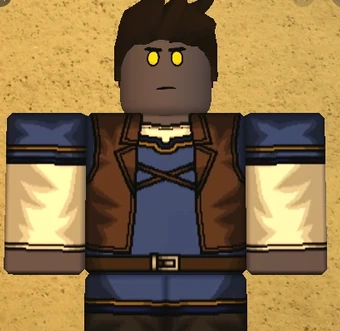 Rigan |
|
16.2% |
| 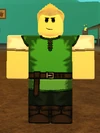 Castellan |
|
15.9% |
| 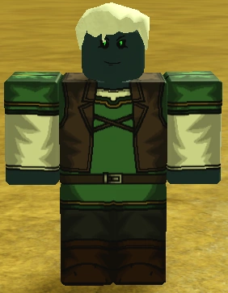 Dinakiri |
|
1.9% |
| 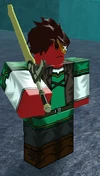 Dzin |
|
1% |
| 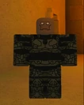 Gaian |
|
7.6% |
| 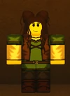 Hasldan |
|
19.4% |
| 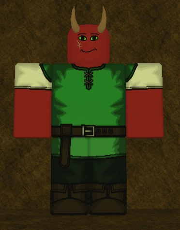 Kasparan |
|
10.2% |
| 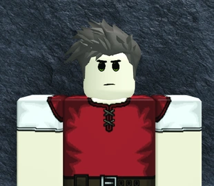 Madrasian |
|
2.9% |
| 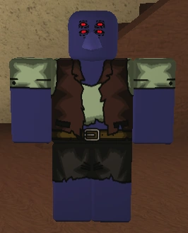 Morvid |
|
1.9% |
| 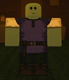 Navaran |
|
4.56% |
| 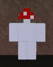 Scroom |
|
XXX |
| 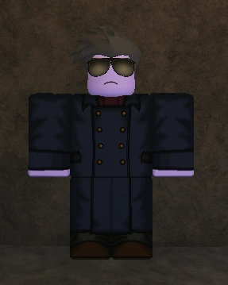 Vind |
|
1% |
| 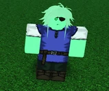 Ficheran |
|
1% |